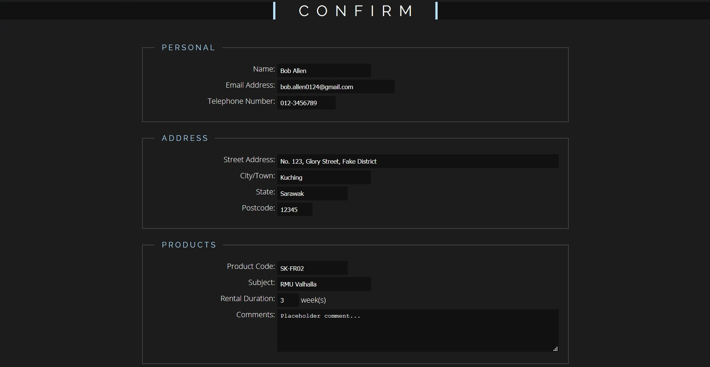
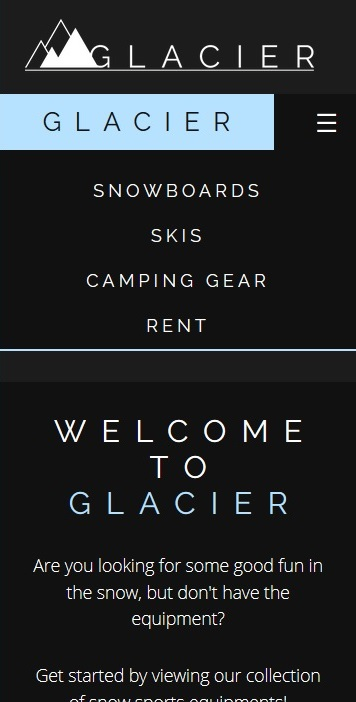
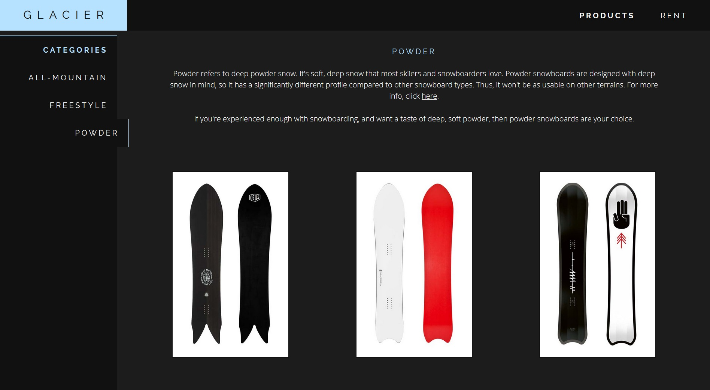

Enhancements2
<

Preview Page
When completing a form, it is very likely for the user to enter values that are inaccurate but fit the criteria of the input, like misspelling a name or enter the wrong number. Thus, it is better to provide the user a way of checking and confirming their inputs before submitting the form.
To achieve this, values from the form are stored in the sessionStorage. Using the sessionStorage, values can be transferred to other webpages for use, thus it is useful for this context. The values are then obtained and displayed in another page for the user to confirm their inputs.
In context of this assignment, values within the form in the enquiry.html page are stored and then sent to confirmation.html after clicking the "Submit" button. You may try it out by filling the form in enquiry.html and clicking "Submit".

Mobile Navigation Bar
In order to create fluid and responsive website, the layout of the website should change and rescale in order to conform to the device width and height. This is the same for the navigation bar. On a mobile device, the long navigation bar that can be seen on a desktop or tablet will not be as suitable, thus a different navigation bar should be used for mobile devices with small screens.
Thus, to achieve this, a navigation bar that contains a button to further open a list of links was used for this website. In order to create this "drawer" functionality, JS was used to toggle the displaying of the links. When the button is clicked, the event will change the display of the list based on its current value. If it is open, then it will close and vice versa. Example of this feature can be seen anywhere on the website, such as index.html.

Display Change
Given a product, there may be multiple categories, and they may even have sub-categories in each category. This was the case for this website, and since the number of products in each sub-category was not enough to warrant the creation of another page, JS was used to display different sub-categories at a given moment.
To achieve this, the content of each sub-category were placed in seperate divs. These divs were then stored in a list in JS, along with buttons that correspond to these divs. When a certain button is clicked, the corresponding sub-category will be displayed while hiding the others. Examples of this feature can be seen from any product*.html.
Regular Expressions
Regular expressions, or RegEx for short, are used to check strings for a match with a given pattern. These can be used in many different ways, such as to check input to see if they fit a certain criteria, or to find specific words in a long paragraph. RegEx is used in this website to validate form input based on certain criteria.
To do this, a simple ".match" method can be used to check a string according to a given pattern. The complex part is the RegEx, as it has its own syntax to form patterns that match different criteria. Example of uses of RegEx in this assignment is in the enquiry.html.
HTML Form Element
To access inputs in a form, the HTML Form Element was used. This is done by just indexing the document.forms attribute, like "document.forms["formname"]". This will return the form element which can then be used to access input values or other attributes. In this assignment, the form element was used to obtain values from the inputs, to manipulate the "onsubmit" event of the form and to also set values into the inputs. This feature is used in enquiry.html and confirmation.html
Back To Site